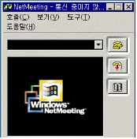
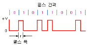
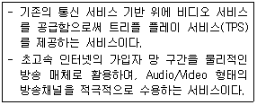
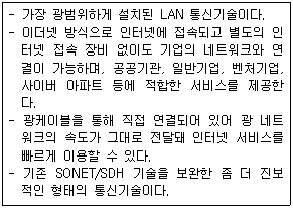

네트워크관리사-2급 (2010-01-31 기출문제)
1과목: TCP/IP
1. HTTP에 대한 설명 중 올바른 것은?
- 인터넷을 통해 파일을 송·수신하기 위한 전용 프로토콜
- 인터넷 전자우편을 위한 프로토콜
- 하이퍼텍스트 문서를 전송하기 위한 프로토콜
- 원격 접속을 하기 위한 프로토콜
(정답률: 83%)

2. 무선 홈 네트워크 기술로 옳지 않은 것은?
- Bluetooth
- HomePNA
- IEEE 802.11
- HomeRF
(정답률: 64%)
3. IP Address가 "203.253.192.21"인 Server가 속한 Class는?
- A Class
- B Class
- C Class
- D Class
(정답률: 88%)
4. CSMA/CD의 특징으로 옳지 않은 것은?
- 충돌 도메인이 작을수록 좋다.
- 충돌이 발생하면 임의의 시간 동안 대기하므로 지연 시간을 예측하기 어렵다.
- 네트워크상의 컴퓨터들이 데이터 전송을 개시하기 위해서는 반드시 ‘토큰’이라는 권한을 가지고 있어야 한다.
- 컴퓨터들은 케이블의 데이터 흐름 유무를 특정 신호를 주기적으로 보내 감시한다.
(정답률: 77%)
5. 서브넷 마스크에 대한 설명으로 옳지 않은 것은?
- 서브네팅이란 주어진 IP 주소 범위를 필요에 따라서 여러 개의 서브넷으로 분리하는 작업이다.
- 서브넷 마스크를 이용하여 목적지 호스트가 동일한 네트워크상에 있는지 확인한다.
- 필요한 서브넷의 수를 고려하여 서브넷 마스크 값을 결정한다.
- 서브넷 마스크는 Network ID 필드는 '0'으로, Host ID 필드는 `1'로 채운다.
(정답률: 84%)
6. 오디오와 비디오와 같은 실시간 데이터를 전송하기 위한 인터넷 프로토콜로, 인터넷 폰의 통신 프로토콜로 사용되는 것은?

- SNMP
- RTP
- NetBEUI
- NetBIOS
(정답률: 61%)
7. 통신관련 약어의 풀이로 옳지 않은 것은?
- TCP - Transfer Control Protocol
- UDP - User Datagram Protocol
- IP - Internet Protocol
- FTP - File Transfer Protocol
(정답률: 64%)
8. DHCP에 관한 설명으로 옳지 않은 것은?
- 중앙에서 IP Address를 관리하고 개별 클라이언트들에게 자동으로 할당한다.
- IP Address를 할당 받으려면 반드시 DHCP 서버의 IP Address를 클라이언트의 네트워크 등록정보에 입력해야 한다.
- DHCP는 호스트 이동 시에 자동으로 새로운 IP Address를 할당할 수 있다.
- 임의 주소를 할당하는 경우에는 주소 재사용이 가능하다.
(정답률: 65%)
9. ICMP 프로토콜의 기능에 대한 설명으로 옳지 않은 것은?
- 모든 호스트의 논리적 주소 지정을 한다.
- 시작지 호스트의 라우팅 실패를 보고 한다.
- 내용면에서 오류 보고 형식을 가진다.
- 두 호스트 간 연결의 신뢰성을 테스트하기 위한 반향과 회답 메시지를 지원한다.
(정답률: 62%)
10. OSI 7 Layer 중 네트워크 계층 Protocol에 해당되지 않는 것은?
- ARP
- ICMP
- SNMP
- IGMP
(정답률: 67%)
11. 일반적인 NIC(Network Interface Card)의 기능으로 옳지 않은 것은?
- MAC 프레임의 구성
- 전송매체 접속 제어
- 전송 프레임의 버퍼링
- 패킷의 전송 경로 설정
(정답률: 59%)
12. SMTP에 대한 설명으로 올바른 것은?
- WWW에서 사용하는 데이터 전송 프로토콜이다.
- 네트워크 장비들을 관리하기 위한 프로토콜이다.
- 파일 전송을 위한 프로토콜이다.
- 인터넷 전자 우편을 위한 프로토콜이다.
(정답률: 87%)
13. 텔넷(Telnet)에 대한 설명 중 옳지 않은 것은?
- RFC 854에 명시되어 있다.
- 텔넷 서비스는 기본적으로 TCP 포트 43번을 사용한다.
- 네트워크상에 연결된 컴퓨터에 로그인한 후 각종 명령어를 사용한다.
- 두 호스트 간에 쌍방향 통신 세션을 가능하게 한다.
(정답률: 84%)
14. DNS 서버가 호스트 이름을 IP Address로 변환하는 역할을 수행하도록 설정하는 것은?
- 정방향 조회
- 역방향 조회
- 양방향 조회
- 영역 설정
(정답률: 76%)
15. SSH에 대한 설명으로 올바른 것은?
- TFTP와 같은 UDP 프로토콜을 사용한다.
- 패스워드가 암호화되지 않으므로 패스워드가 보호되지 않는다.
- Secure Shell 이라고 부른다.
- 쌍방 간 인증을 위해 SEED 알고리즘이 이용된다.
(정답률: 71%)
16. FTP의 주된 기능에 대한 설명으로 올바른 것은?
- 파일을 전송하기 위한 프로토콜이다.
- 원격 시스템의 파일들을 실행하기 위한 프로토콜이다.
- Anonymous FTP를 사용하면, 텍스트 문서만을 송수신할 수 있다.
- FTP는 익명으로만 파일을 전송하는 프로토콜이다.
(정답률: 81%)
17. IP에 관한 설명 중 옳지 않은 것은?
- 비신뢰성 서비스를 제공한다.
- 비연결형 서비스를 제공한다.
- OSI 7 Layer 중 네트워크 계층에 속한다.
- IPv4 헤더에는 체크섬(Checksum)이 포함되어 있지 않다.
(정답률: 69%)
2과목: 네트워크 일반
18. 국제표준화기구 중 전화, 팩시밀리, 패킷 교환 데이터 통신 등 공중 정보 통신망에 관련된 업무를 담당하는 기구는?
- ATM(Asynchronous Transfer Mode)
- NMF(Network Management Forum)
- ITU-T(International Telecommunication Union Telecommunication Standardization Sector)
- EMI(Electro Magnetic Interference)
(정답률: 80%)
19. 디지털 데이터를 인코딩한 결과 데이터가 "1"인 경우에 펄스 주기의 처음 50[%]는 (+)전압으로 표시되고 나머지 50[%]는 0전압으로 나타내고 있다면 이때 사용한 인코딩 방식은?

- 단류 RZ(Return to Zero)
- 맨체스터
- 차분 맨체스터
- NRZ(Non-Return to Zero)
(정답률: 66%)
20. PCM 전송 방식을 올바르게 기술한 것은?
- 아날로그 신호 → 부호화 → 양자화 → 표본화 → 전송로
- 아날로그 신호 → 양자화 → 표본화 → 부호화 → 전송로
- 아날로그 신호 → 표본화 → 양자화 → 부호화 → 전송로
- 아날로그 신호 → 부호화 → 표본화 → 양자화 → 전송로
(정답률: 79%)
21. 패킷 교환망의 특징으로 옳지 않은 것은?
- 연결설정에 따라 가상회선과 데이터그램으로 분류된다.
- 메시지를 보다 짧은 길이의 패킷으로 나누어 전송한다.
- 망에 유입되는 데이터의 양이 많아질수록 전송속도가 빠르다.
- 블록킹 현상이 없다.
(정답률: 84%)
22. 근거리 통신망(LAN)의 국제 표준 모델을 제공하고 있는 표준 규격은?
- ISO
- IEEE 802
- X.25
- TCP/IP
(정답률: 77%)
23. OSI 7 Layer 중 세션계층의 역할이 아닌 것은?
- 대화 제어
- 에러 제어
- 연결 설정 종료
- 동기화
(정답률: 70%)
24. 네트워크에 연결되어 있는 모든 컴퓨터들이 서로 대등한 입장에서 데이터나 주변장치 등을 공유할 수 있다는 의미를 담고 있는 모델은?
- 클라이언트/서버 모델
- 마스터/슬레이브 모델
- Peer to Peer 모델
- Network to Network 모델
(정답률: 73%)
25. 다음에서 설명하는 서비스는?

- IPTV(Internet Protocol TV)
- Bluetooth
- IMT-2000
- WAP(Wireless Application Protocol)
(정답률: 89%)
26. 아래에서 설명하는 통신기술로 올바른 것은?

- Home Network
- FDDI
- 메트로 이더넷
- 위성 통신
(정답률: 63%)
27. 적외선 방식을 이용한 무선 네트워크 응용으로 옳지 않은 것은?
- 적외선 포트가 설치된 데스크 탑, 노트북, PDA 간 상호통신
- 적외선을 지원하는 주변기기(디지털 카메라, 프린터 등)와 컴퓨터의 상호통신
- 적외선을 지원하는 휴대폰과 휴대폰의 상호통신
- 적외선을 지원하는 휴대폰과 기지국의 상호통신
(정답률: 78%)
3과목: NOS
28. Windows 2000 Server의 IIS(Internet Information Server)에서 설정 가능한 서비스로 옳지 않은 것은?
- TELNET 서비스
- FTP 서비스
- NNTP 서비스
- WWW 서비스
(정답률: 66%)
29. Linux 시스템에서 특정 서비스를 제공하는 Daemon이 살아있는지 확인할 때 사용하는 명령어는?
- daemon
- fsck
- men
- ps
(정답률: 67%)
30. Domain Name을 IP Address로 변환해주는 역할을 하는 것은?
- IIS
- DHCP
- NNTP
- DNS
(정답률: 79%)
31. Linux 시스템에서 “ping 이라는 파일을 표준 입력으로 받아서 만들어라”에 대한 명령어 형식으로 올바른 것은?
- cat > ping
- cat ping
- cat - ping
- cat < ping
(정답률: 74%)
32. Windows 2000 Server에서 FTP(File Transfer Protocol)는 두 가지 분리된 TCP 연결을 사용한다. 하나는 명령과 결과를 전달하는 연결(명령 채널)이고, 다른 하나는 실제 파일과 전송되는 디렉터리 목록(데이터 채널)을 전달하는 것이다. Active Mode를 사용했을 때 Server 측에서 기본적으로 사용되는 명령 채널과 데이터 채널의 포트 번호로 올바른 것은?
- 명령 채널- 20, 데이터 채널 - 21
- 명령 채널- 1001, 데이터 채널 - 1002
- 명령 채널- 21, 데이터 채널 - 20
- 명령 채널- 1002, 데이터 채널 - 1001
(정답률: 61%)
33. 공개키 암호 시스템에서 공개키가 인증되지 않으면 많은 문제점이 발생한다. 따라서 공개키에 대한 인증서를 발급하는 공개키 기반구조(PKI)시스템이 이용된다. 이러한 공개키 인증서는 어디에 포함 되는가?
- X.400
- X.409
- X.500
- X.509
(정답률: 54%)
34. SMTP 서비스는 메일 루트 디렉터리를 사용한다. 그리고 몇 가지 하위 디렉터리가 메일 메시지를 관리한다. 다음 하위 디렉터리의 설명으로 옳지 않은 것은?
- 드롭(Drop) : 삭제된 메시지를 텍스트로 저장한다.
- 큐(Queue) : Incoming 메시지는 전달되기 전에 큐 디렉터리에 저장된다.
- 픽업(Pickup) : 수동으로 메시지를 대기시키는 저장소이다.
- 배드메일(Badmail) : 배달될 수 없는 메시지를 저장한다.
(정답률: 61%)
35. 일반적인 운영체제의 보안에서 제공하는 기능으로 옳지 않은 것은?
- 파일 보호
- 메모리 보호
- 레지스터 보호
- 접근 통제
(정답률: 52%)
36. Windows 2000 Server에서 Active Directory의 논리적 구조로 옳지 않은 것은?
- Domain
- Tree
- Forest
- Graph
(정답률: 72%)
37. Windows 2000 Server의 감사 로그 관리에 관한 설명 중 옳지 않은 것은?
- 개별적인 감사 로그의 등록 정보를 구성할 수 있다.
- 이벤트 로그를 저장하고 다른 기간 동안 로그를 비교하여 Server의 사용자 경향을 추적할 수 있다.
- [등록정보]에서 "이벤트를 덮어쓰지 않음"으로 설정될 경우 로그가 가득 채워지면 자동으로 로그를 삭제한다.
- Window 2000 Server가 취하는 동작을 조절하기 위해서는 [등록정보]를 사용할 수 있다.
(정답률: 70%)
38. Windows 2000 Server의 로컬 그룹에서 몇 가지의 제한적인 권한을 가지는 관리자 그룹이며 일반적인 시스템 관리업무인 로컬사용자 만들기, 공유 설정 등을 수행할 수 있는 그룹은?
- Backup Operators
- Guests
- Power Users
- Replicator
(정답률: 61%)
39. Windows 2000 Server의 보안 구성 관리자 도구 중 명령 프롬프트에서 보안 구성 작업을 자동화 하는 도구는?
- Secedit
- 보안 템플릿
- 그룹 정책으로 보안 설정 확장
- Local Security Policy
(정답률: 48%)
40. Windows 2000 Server가 감시할 수 있는 이벤트의 종류를 설명한 것 중 잘못된 것은?
- 정책 변경 : 사용자 보안옵션, 사용자 권한 또는 계정 정책이 변경되는 이벤트
- 시스템 이벤트 : Windows 2000 보안 및 보안 로그에 영향을 주는 이벤트
- 디렉터리 서비스 액세스 : 사용자가 파일, 폴더 또는 프린터에 액세스 하는 이벤트
- 권한 사용 : 시스템 시간 변경과 같은 사용자가 권한을 사용한 이벤트
(정답률: 52%)
41. Windows 2000 Server의 이벤트 뷰어에서 확인할 수 있는 이벤트 헤더에 포함되지 않는 정보는?
- 날짜/시간
- 사용자
- 컴퓨터
- 성공 유무
(정답률: 65%)
42. Windows 2000 Sever의 시스템이 정상적으로 부팅할 수 없는 경우가 발생했다. 모든 시작 부트 옵션이 실패했을 경우 사용하는 것으로, Windows 2000 Server를 시작할 수 있는 최소한의 버전이며, 관리자 계정으로 로그온 하여 시스템 복구 작업을 수행할 수 있는 명령 세트를 제공하는 복원 방법은?
- 부트 옵션 사용
- 복구 콘솔 사용
- 백업 프로그램 사용
- 서버 재구축
(정답률: 69%)
43. Windows 2000 Server에서 시스템 성능을 모니터링 하기 위한 툴을 나열한 것 중 올바른 것은?
- Task Manager, Performance Console
- Task Manager, Network Optimizer
- Disk Manager, Recovery Console
- Performance Console, Recovery Console
(정답률: 60%)
44. Linux에서 사용되는 스왑 영역(Swap Space)에 관한 설명으로 올바른 것은?
- 스왑 영역이란 시스템에서 사용 가능한 메모리양을 늘리기 위해 디스크 장치를 이용하는 것을 의미한다.
- 스왑 영역은 가상 메모리 형태로 이용되며 실제 물리적 메모리와 같은 처리속도를 갖는다.
- 시스템이 부팅될 때 부팅 가능한 커널 이미지 파일을 담는 영역으로 10Mbyte 정도면 적당하다.
- Linux에 필요한 바이너리 파일과 라이브러리 파일들이 저장되는 영역으로 많은 용량을 요구한다.
(정답률: 63%)
45. Windows 2000 Server가 기본적으로 지원하는 File System으로 옳지 않은 것은?
- EXT2
- NTFS
- FAT
- FAT32
(정답률: 73%)
4과목: 네트워크 운용기기
46. RAID 방식 중 미러링(Mirroring)이라고 하며, 최고의 성능과 고장대비 능력을 발휘하는 것은?
- RAID 0
- RAID 1
- RAID 3
- RAID 5
(정답률: 72%)
47. 허브(Hub)에 대한 설명이 올바른 것은?
- 더미 허브(Dummy Hub) - 단순한 접속 기능만을 제공 즉, 허브로 전달되는 데이터를 다른 모든 컴퓨터에 전달하는 기능만 제공
- 스택커블 허브(Stackable Hub) - 접속된 노드에 대한 패킷 전송이 과도할 정도로 오래 지연되거나 과도한 패킷을 전송하는 경우 자동으로 해당 포트를 네트워크에서 분리하는 기능을 제공
- 지능형 허브(Intelligent Hub) - 매니지먼트 허브(Management Hub)라고도 하며 100대 정도 되는 중규모 이상의 네트워크를 구성할 때 한 대의 마스터와 다수의 슬레이브 허브로 구성하며 네트워크 관리자는 한대의 허브만 관리하는 장점이 생김
- 듀얼 스피드 허브(Dual Speed Hub) - SNMP(Simple Network Management Protocol)를 이용하여 원격지에서도 포트별 작동 상황을 감시할 수 있는 기능을 제공하며, 각 허브에 연결된 컴퓨터 사이에 속도의 저하가 일어나지 않거나 적게 일어남
(정답률: 66%)
48. 전송 매체의 특성 중 Fiber Optics에 해당하는 것은?
- 여러 라인의 묶음으로 사용하면 간섭 현상을 줄일 수 있다.
- 신호 손실이 적고, 전자기적 간섭이 없다.
- 송수신에 사용되는 구리 핀은 8개 중 4개만 사용한다.
- 수 Km이상 전송 시 Repeater를 반드시 사용해야 한다.
(정답률: 65%)
49. 해커의 공격 방법 중 하나로, 서버에 필요 이상의 서비스 요구를 계속 보냄으로써 정상적인 서비스가 불가능하도록 하는 공격 방법은?
- DoS(Denial of Service)
- Loss of Privacy
- Impersonation
- Loss of Integrity
(정답률: 87%)
50. DSU(Digital Service Unit)에 대한 설명으로 옳지 않은 것은?
- 전용선로로 전송되는 디지털 신호를 받아 처리하는 기능을 갖는 일종의 모뎀이다.
- WAN에 접근하기 위한 망 종단 장비이다.
- 전용선으로 전달되는 단극(Unipolar) 신호를 쌍극(Bipolar) 신호로 변환해 주는 역할을 한다.
- 원거리를 네트워크로 연결하기 위해 사용된다.
(정답률: 54%)